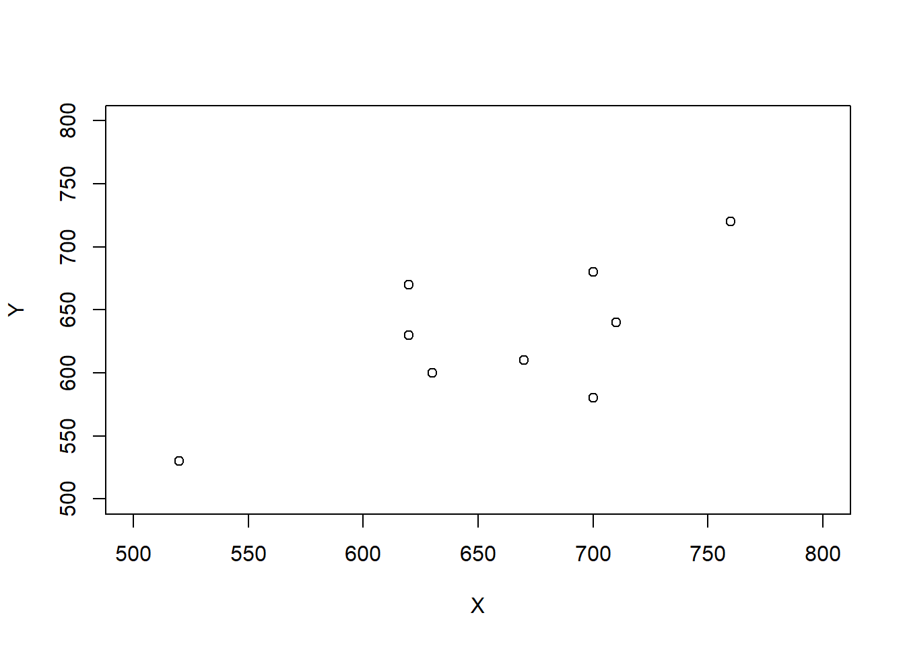
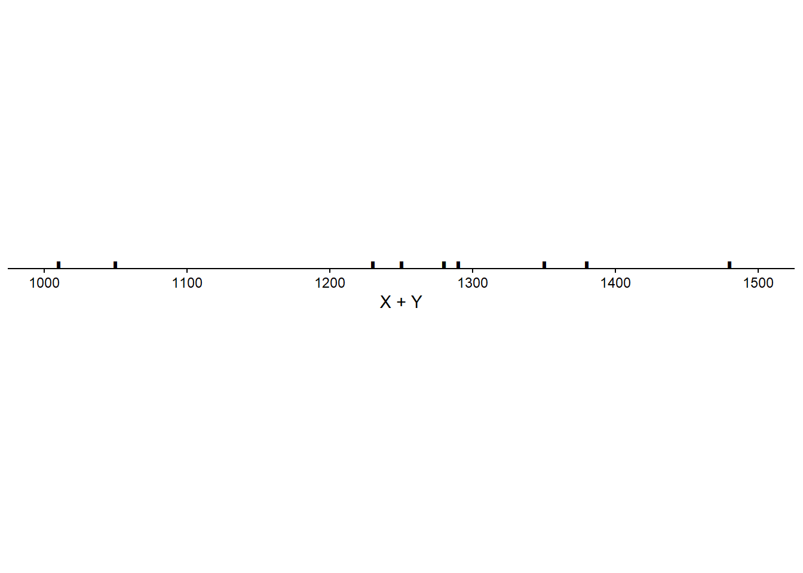
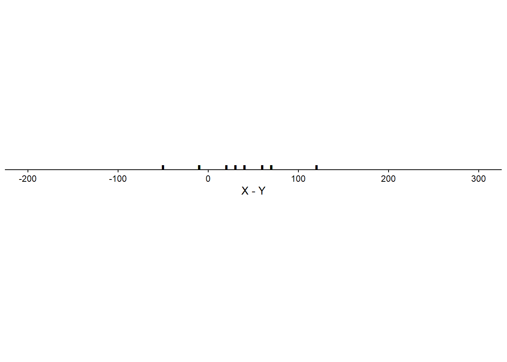
Remember that, in general, you cannot interchange averaging and transformation. In general, an expected value of a function of random variables is not the function evaluated at the expected values of the random variables.
\[\begin{align*} \textrm{E}(g(X)) & \neq g(\textrm{E}(X)) & & \text{for most functions $g$}\\ \textrm{E}(g(X, Y)) & \neq g(\textrm{E}(X), \textrm{E}(Y)) & & \text{for most functions $g$} \end{align*}\]
But there are some functions, namely linear functions, for which an expected value of the transformation is the transformation evaluated at the expected values. In this section, we will study “linearity of expected value” and applications. We will also investigate variance of linear transformations of random variables, and in particular, the role that covariance plays.
A linear rescaling is a transformation of the form \(g(u) = au + b\). Recall that in ?sec-linear-rescaling we observed, via simulation, that
If \(X\) is a random variable and \(a, b\) are non-random constants then
\[\begin{align*} \textrm{E}(aX + b) & = a\textrm{E}(X) + b\\ \textrm{SD}(aX + b) & = |a|\textrm{SD}(X)\\ \textrm{Var}(aX + b) & = a^2\textrm{Var}(X) \end{align*}\]
In the previous example, the values \(U_1\) and \(U_2\) came from separate spins so they were uncorrelated (in fact, they were independent). What about the expected value of \(X+Y\) when \(X\) and \(Y\) are correlated?
Scenario 1.
| Student | \(X\) | \(Y\) | \(T\) | \(D\) |
|---|---|---|---|---|
| 1 | 520 | 530 | 1050 | -10 |
| 2 | 540 | 470 | 1010 | 70 |
| 3 | 620 | 670 | 1290 | -50 |
| 4 | 620 | 630 | 1250 | -10 |
| 5 | 630 | 600 | 1230 | 30 |
| 6 | 670 | 610 | 1280 | 60 |
| 7 | 700 | 680 | 1380 | 20 |
| 8 | 700 | 580 | 1280 | 120 |
| 9 | 710 | 640 | 1350 | 70 |
| 10 | 760 | 720 | 1480 | 40 |
| Mean | 647 | 613 | 1260 | 34 |
| SD | 72 | 70 | 134 | 47 |
| Corr(\(X\), \(Y\)) | 0.78 |



Scenario 2.
| Student | \(X\) | \(Y\) | \(T\) | \(D\) |
|---|---|---|---|---|
| 1 | 520 | 680 | 1200 | -160 |
| 2 | 540 | 530 | 1070 | 10 |
| 3 | 620 | 630 | 1250 | -10 |
| 4 | 620 | 600 | 1220 | 20 |
| 5 | 630 | 720 | 1350 | -90 |
| 6 | 670 | 470 | 1140 | 200 |
| 7 | 700 | 670 | 1370 | 30 |
| 8 | 700 | 580 | 1280 | 120 |
| 9 | 710 | 640 | 1350 | 70 |
| 10 | 760 | 610 | 1370 | 150 |
| Mean | 647 | 613 | 1260 | 34 |
| SD | 72 | 70 | 98 | 103 |
| Corr(\(X\), \(Y\)) | -0.04 |
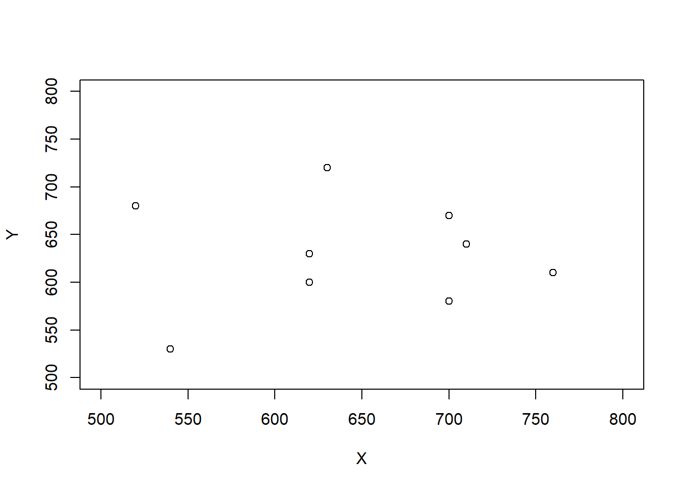
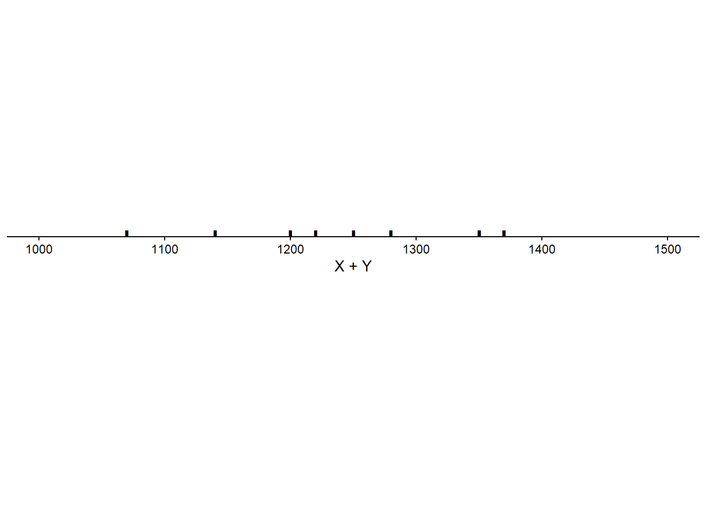
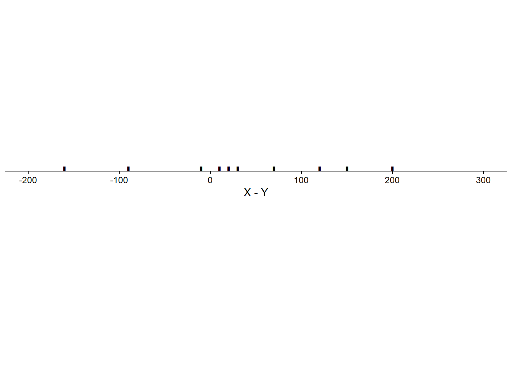
Scenario 3.
| Student | \(X\) | \(Y\) | \(T\) | \(D\) |
|---|---|---|---|---|
| 1 | 520 | 720 | 1240 | -200 |
| 2 | 540 | 680 | 1220 | -140 |
| 3 | 620 | 670 | 1290 | -50 |
| 4 | 620 | 640 | 1260 | -20 |
| 5 | 630 | 630 | 1260 | 0 |
| 6 | 670 | 610 | 1280 | 60 |
| 7 | 700 | 600 | 1300 | 100 |
| 8 | 700 | 580 | 1280 | 120 |
| 9 | 710 | 530 | 1240 | 180 |
| 10 | 760 | 470 | 1230 | 290 |
| Mean | 647 | 613 | 1260 | 34 |
| SD | 72 | 70 | 26 | 140 |
| Corr(\(X\), \(Y\)) | -0.94 |
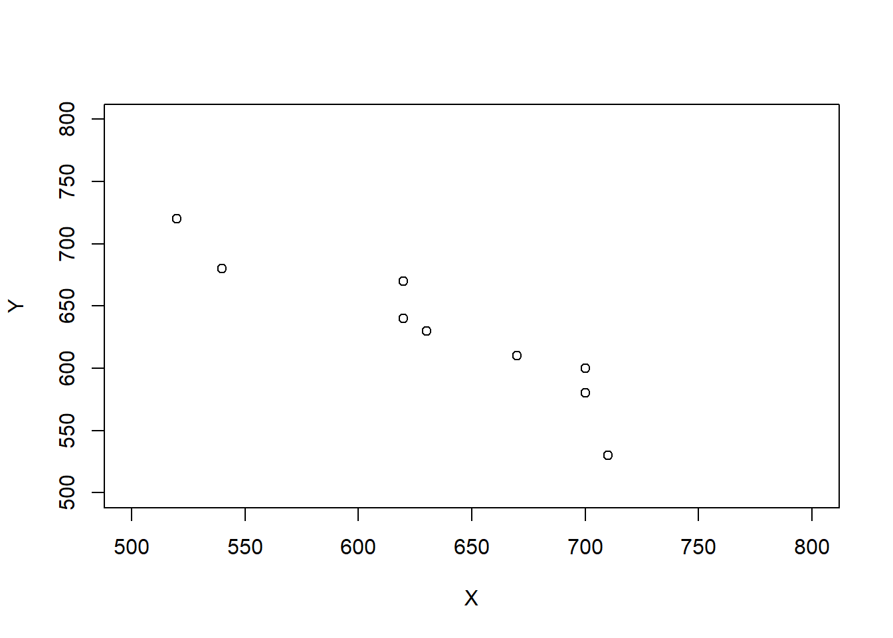
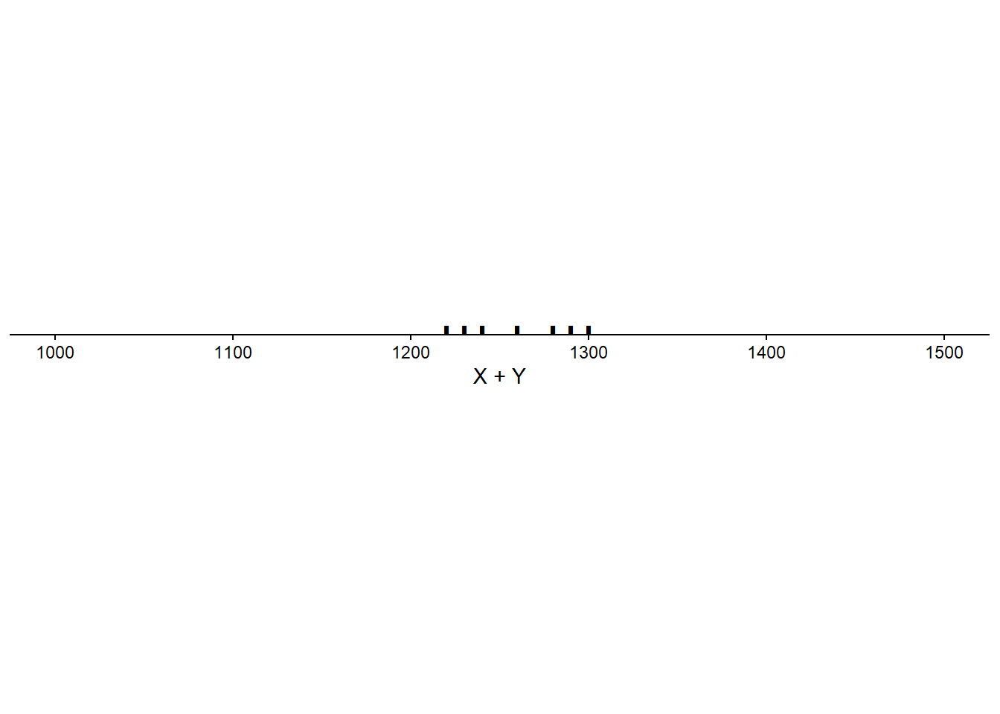
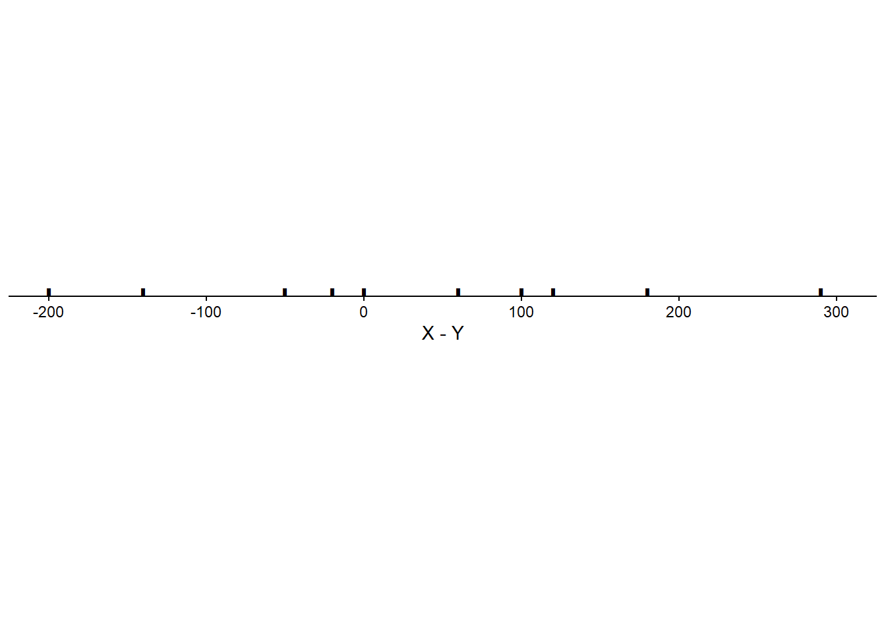
Linearity of expected value. For any two random variables \(X\) and \(Y\), \[\begin{align*} \textrm{E}(X + Y) & = \textrm{E}(X) + \textrm{E}(Y) \end{align*}\] That is, the expected value of the sum is the sum of expected values, regardless of how the random variables are related. Therefore, you only need to know the marginal distributions of \(X\) and \(Y\) to find the expected value of their sum. (But keep in mind that the distribution of \(X+Y\) will depend on the joint distribution of \(X\) and \(Y\).)
Linearity of expected value follows from simple arithmetic properties of numbers. Whether in the short run or the long run, \[\begin{align*} \text{Average of $X + Y$ } & = \text{Average of $X$} + \text{Average of $Y$} \end{align*}\] regardless of the joint distribution of \(X\) and \(Y\). For example, for the two \((X, Y)\) pairs (4, 3) and (2, 1) \[ \text{Average of $X + Y$ } = \frac{(4+3)+(2+1)}{2} = \frac{4+2}{2} + \frac{3+1}{2} = \text{Average of $X$} + \text{Average of $Y$}. \] Changing the \((X, Y)\) pairs to (4, 1) and (2, 3) only moves values around in the calculation of the average without affecting the result. \[ \text{Average of $X + Y$ } = \frac{(4+1)+(2+3)}{2} = \frac{4+2}{2} + \frac{3+1}{2} = \text{Average of $X$} + \text{Average of $Y$}. \]
A linear combination of two random variables \(X\) and \(Y\) is of the form \(aX + bY\) where \(a\) and \(b\) are non-random constants. Combining properties of linear rescaling with linearity of expected value yields the expected value of a linear combination. \[ \textrm{E}(aX + bY) = a\textrm{E}(X)+b\textrm{E}(Y) \] For example, \(\textrm{E}(X - Y) = \textrm{E}(X) - \textrm{E}(Y)\). The left side above, \(\textrm{E}(aX+bY)\), represents the “long way”: find the distribution of \(aX + bY\), which will depend on the joint distribution of \(X\) and \(Y\), and then use the definition of expected value. The right side above, \(a\textrm{E}(X)+b\textrm{E}(Y)\), is the “short way”: find the expected values of \(X\) and \(Y\), which only requires their marginal distributions, and plug those numbers into the transformation formula. Similar to LOTUS, linearity of expected value provides a way to find the expected value of certain random variables without first finding the distribution of the random variables.
Linearity of expected value extends naturally to more than two random variables.
The answer to the previous problem is not an approximation: the expected value of the number of matches is equal to 1 for any \(n\). We think that’s pretty amazing. (We’ll see some even more amazing results for this problem later.) Notice that we computed the expected value without first finding the distribution of \(X\). When \(n=4\) we found the distribution of \(X\) by enumerating all the possibilities. Obviously this is not feasible when \(n\) is large, and in general it is difficult to find the exact distribution of \(X\) in the matching problem (though we’ll see a pretty good approximation later). However, as the previous example shows, we don’t need to find the distribution of \(X\) to find \(\textrm{E}(X)\).
Intuitively, if the objects are placed in the spots uniformly at random, then the probability that object \(j\) is placed in the correct spot should be the same for all the objects, \(1/n\). But you might have said: “if object 1 goes in spot 1, there are only \(n-1\) objects that can go in spot 2, so the probability that object 2 goes in spot to is \(1/(n-1)\)”. That is true if object 1 goes in spot 1. However, when computing the marginal probability that object 2 goes in spot 2, we don’t know whether object 1 went in spot 1 or not, so the probability needs to account for both cases. Remember, there is a difference between marginal/unconditional probability and conditional probability; ?sec-conditional-versus-unconditional. Linearity of expected value is useful because we only need the marginal distribution of each random variable to compute the sum of their expected values.
When a problem asks “find the expected number of…” it’s a good idea to try using indicator random variables and linearity of expected value. The following is a general statement of the strategy we used in the matching problem.
Let \(A_1, A_2, \ldots, A_n\) be a collection of \(n\) events. Suppose event \(i\) occurs with marginal probability \(p_i=\textrm{P}(A_i)\). Let \(N = \textrm{I}_{A_i} + \textrm{I}_{A_2} + \cdots + \textrm{I}_{A_n}\) be the random variable which counts the number of the events in the collection which occur. Then the expected number of events that occur is the sum of the event probabilities. \[ \textrm{E}(N) = \sum_{i=1}^n p_i. \] If each event has the same probability, \(p_i \equiv p\), then \(\textrm{E}(N)\) is equal to \(np\). These formulas for the expected number of events are true regardless of whether there is any association between the events (that is, regardless of whether the events are independent.)
For example, in the matching problem \(A_i\) was the event that object \(i\) was placed in spot \(i\) and \(p_i=1/n\) for all \(i\).
When computing the expected value of a random variable, consider if it can be written as a sum of component random variables. If so, then using linearity of expected value is usually easier than first finding the distribution of the random variable. Of course, the expected value is only one feature of the distribution of a random variable; there is much more to a distribution than its expected value.
We have seen that correlation does not affect the expected value of a linear combination of random variables. But what affect, if any, does correlation have on the variance of a linear combination of random variables?
When two variables are correlated the degree of the association will affect the variability of linear combinations of the two variables.
The degree of correlation between two random variables affects the variability of their sum and difference. The following formulas represent the math behind the observations we made in the previous problem.
Variance of sums and differences of random variables. \[\begin{align*} \textrm{Var}(X + Y) & = \textrm{Var}(X) + \textrm{Var}(Y) + 2\textrm{Cov}(X, Y)\\ \textrm{Var}(X - Y) & = \textrm{Var}(X) + \textrm{Var}(Y) - 2\textrm{Cov}(X, Y) \end{align*}\]
The left side represents first finding the distribution of the random variable \(X+Y\) and computing its variance. The right side represents using the joint (and marginal) distribution of \((X, Y)\) to compute the variance of the sum. However, to compute the right side we do not need the full joint and marginal distributions; we simply need the marginal variances and the covariance (or correlation).
If \(X\) and \(Y\) have a positive correlation: Large values of \(X\) are associated with large values of \(Y\) so the sum is really large, and small values of \(X\) are associated with small values of \(Y\) so the sum is really small. That is, the sum exhibits more variability than it would if the values of \(X\) and \(Y\) were uncorrelated.
If \(X\) and \(Y\) have a negative correlation: Large values of \(X\) are associated with small values of \(Y\) so the sum is moderate, and small values of \(X\) are associated with large values of \(Y\) so the sum is moderate. That is, the sum exhibits less variability than it would if the values of \(X\) and \(Y\) were uncorrelated.
The following simulation illustrates the previous example when the correlation is 0.77. First we simulate \((X, Y)\) pairs.
X, Y = RV(BivariateNormal(mean1 = 527, sd1 = 107, mean2 = 533, sd2 = 100, corr = 0.77))
x_and_y = (X & Y).sim(10000)
x_and_y| Index | Result |
|---|---|
| 0 | (581.9121427803482, 643.5379610595642) |
| 1 | (291.3295062934799, 295.1248554144882) |
| 2 | (617.085859591997, 595.2092777943064) |
| 3 | (560.613599623583, 613.9986380064697) |
| 4 | (307.9991816926205, 358.342858521439) |
| 5 | (444.5049205482183, 537.3138258132478) |
| 6 | (416.0708883375292, 392.43823592280137) |
| 7 | (531.2399905053094, 487.0005299173231) |
| 8 | (511.3451479562847, 439.5507578118842) |
| ... | ... |
| 9999 | (405.0850675073047, 328.8419048007052) |
x_and_y.plot()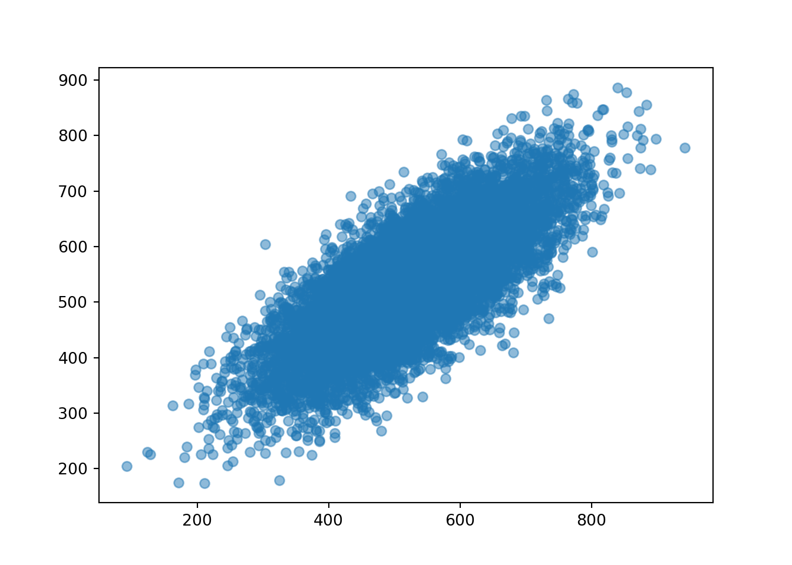
x_and_y.mean()(526.9263830633154, 533.3026902369598)x_and_y.var()(11361.29578596109, 9864.80488460706)x_and_y.sd()(106.5893793300303, 99.32172413227158)Now we look at the sum \(X + Y\). So that our simulation results our consistent with those above we’ll define x + y in “simulation world” (but we could have defined X + Y in “random variable world” and then simulated values of it.)
x = x_and_y[0]
y = x_and_y[1]
t = x + y
t| Index | Result |
|---|---|
| 0 | 1225.4501038399123 |
| 1 | 586.454361707968 |
| 2 | 1212.2951373863034 |
| 3 | 1174.6122376300527 |
| 4 | 666.3420402140595 |
| 5 | 981.8187463614661 |
| 6 | 808.5091242603305 |
| 7 | 1018.2405204226325 |
| 8 | 950.8959057681689 |
| ... | ... |
| 9999 | 733.9269723080099 |
t.plot()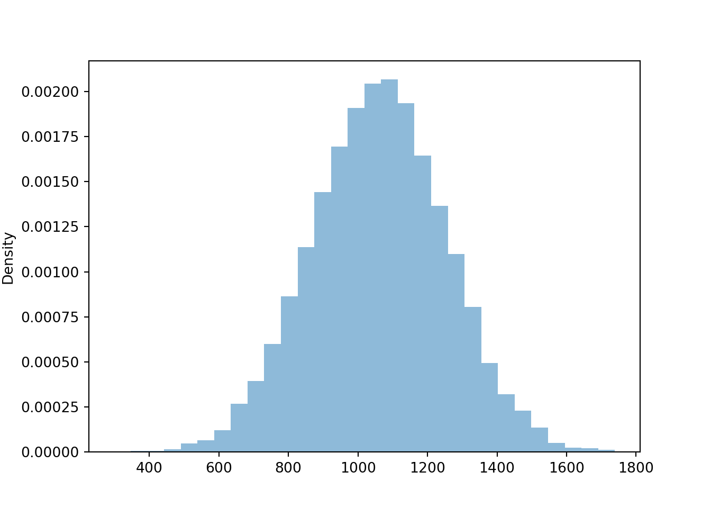
The simulated mean, variance, and standard deviation as close to what we computed in the previous example (of course, there is natural simulation variability).
t.mean()1060.229073300273t.var()37426.983846098556t.sd()193.4605485521494Now we compare the distribution of the sum for each of the four cases for the correlation. Notice how the variability of \(X+Y\) changes based on the correlation. The variability of \(X + Y\) is largest when the correlation is strong and positive, and smallest when the correlation is strong and negative.
X2, Y2 = RV(BivariateNormal(mean1 = 527, sd1 = 107, mean2 = 533, sd2 = 100, corr = 0.4))
t2 = (X2 + Y2).sim(10000)
X3, Y3 = RV(BivariateNormal(mean1 = 527, sd1 = 107, mean2 = 533, sd2 = 100, corr = 0))
t3 = (X3 + Y3).sim(10000)
X4, Y4 = RV(BivariateNormal(mean1 = 527, sd1 = 107, mean2 = 533, sd2 = 100, corr = -0.77))
t4 = (X4 + Y4).sim(10000)
plt.figure()
t.plot()
t2.plot()
t3.plot()
t4.plot()
plt.legend(['corr = 0.77', 'corr = 0.40', 'corr = 0', 'corr = -0.77']);
plt.show()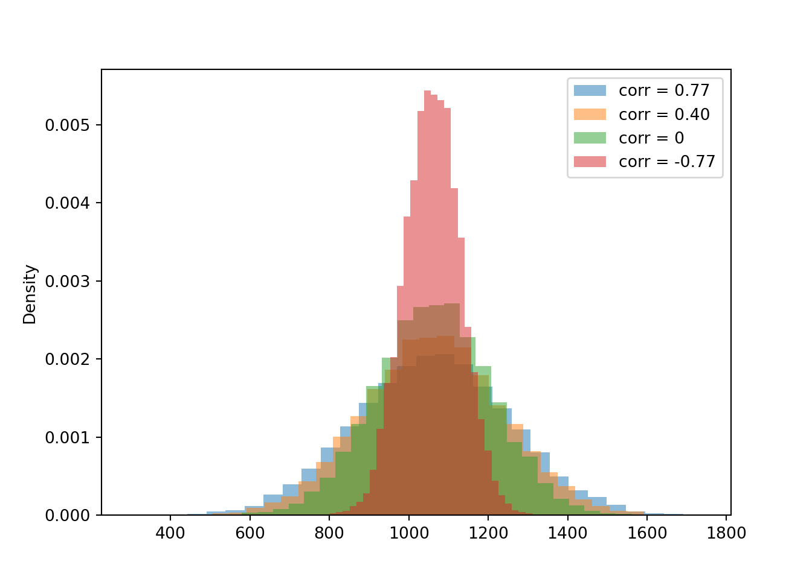
The simulated means, variances, and standard deviations as close to what we computed in the previous example (of course, there is natural simulation variability).
t.mean(), t2.mean(), t3.mean(), t4.mean()(1060.229073300273, 1060.666936939177, 1061.6481609381747, 1059.6081256063185)t.sd(), t2.sd(), t3.sd(), t4.sd()(193.4605485521494, 173.68071979377584, 144.42576722060744, 70.85869214889662)Compare the 90th percentiles of \(X+Y\). The largest value for the 90th percentile occurs when there is the most variability in the sum, so we see more extreme values of the sum.
t.quantile(0.9), t2.quantile(0.9), t3.quantile(0.9), t4.quantile(0.9)(1307.654765819049, 1284.1825106464617, 1245.634903865184, 1149.6867403909657)If \(X\) and \(Y\) have a positive correlation: Large values of \(X\) are associated with large values of \(Y\) so the difference is small, and small values of \(X\) are associated with small values of \(Y\) so the difference is small. That is, the difference exhibits less variability than it would if the values of \(X\) and \(Y\) were uncorrelated.
If \(X\) and \(Y\) have a negative correlation: Large values of \(X\) are associated with small values of \(Y\) so the difference is large and positive, and small values of \(X\) are associated with large values of \(Y\) so the difference is large and negative. That is, the difference exhibits more variability than it would if the values of \(X\) and \(Y\) were uncorrelated.
We continue the simulation from above when the correlation is 0.77. New we look at the difference \(X - Y\). Again, we define the difference x - y in “simulation world” (but we could have defined X - Y in “random variable world” and then simulated values of it).
d = x - y
d| Index | Result |
|---|---|
| 0 | -61.62581827921599 |
| 1 | -3.7953491210083143 |
| 2 | 21.876581797690505 |
| 3 | -53.385038382886705 |
| 4 | -50.3436768288185 |
| 5 | -92.80890526502952 |
| 6 | 23.63265241472783 |
| 7 | 44.23946058798629 |
| 8 | 71.7943901444005 |
| ... | ... |
| 9999 | 76.24316270659949 |
d.plot()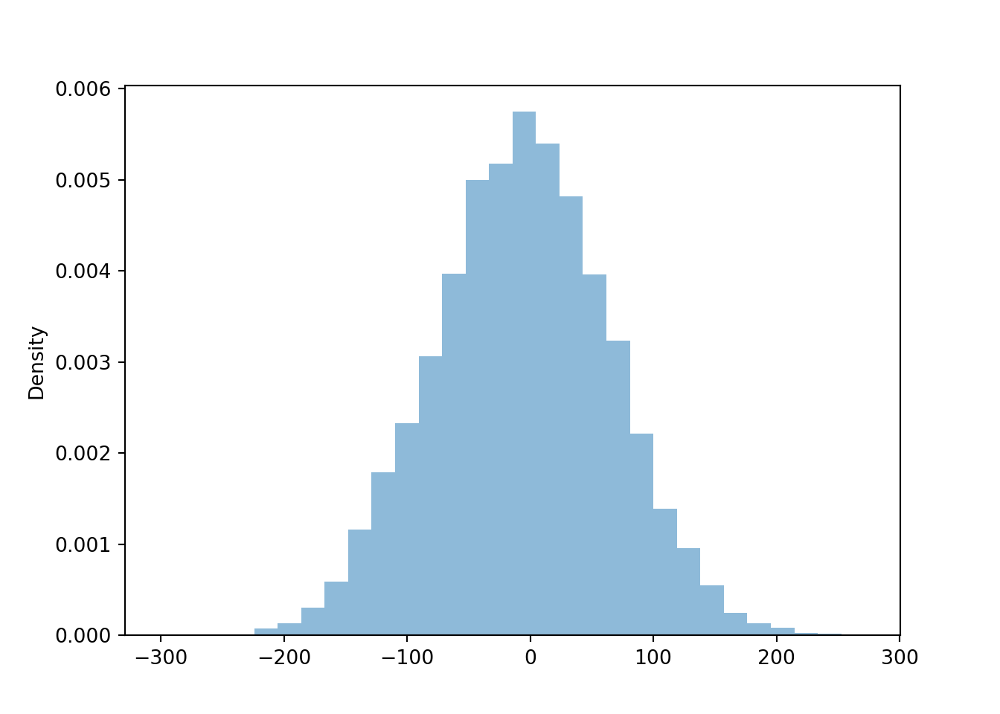
Now we compare the distributions of the difference \(X - Y\) for each of the four cases of correlation. Notice how the variability of \(X-Y\) changes based on the correlation. The variability of \(X - Y\) is largest when the correlation is strong and negative, and smallest when the correlation is strong and positive.
X2, Y2 = RV(BivariateNormal(mean1 = 527, sd1 = 107, mean2 = 533, sd2 = 100, corr = 0.4))
d2 = (X2 - Y2).sim(10000)
X3, Y3 = RV(BivariateNormal(mean1 = 527, sd1 = 107, mean2 = 533, sd2 = 100, corr = 0))
d3 = (X3 - Y3).sim(10000)
X4, Y4 = RV(BivariateNormal(mean1 = 527, sd1 = 107, mean2 = 533, sd2 = 100, corr = -0.77))
d4 = (X4 - Y4).sim(10000)
plt.figure()
d.plot()
d2.plot()
d3.plot()
d4.plot()
plt.legend(['corr = 0.77', 'corr = 0.40', 'corr = 0', 'corr = -0.77']);
plt.show()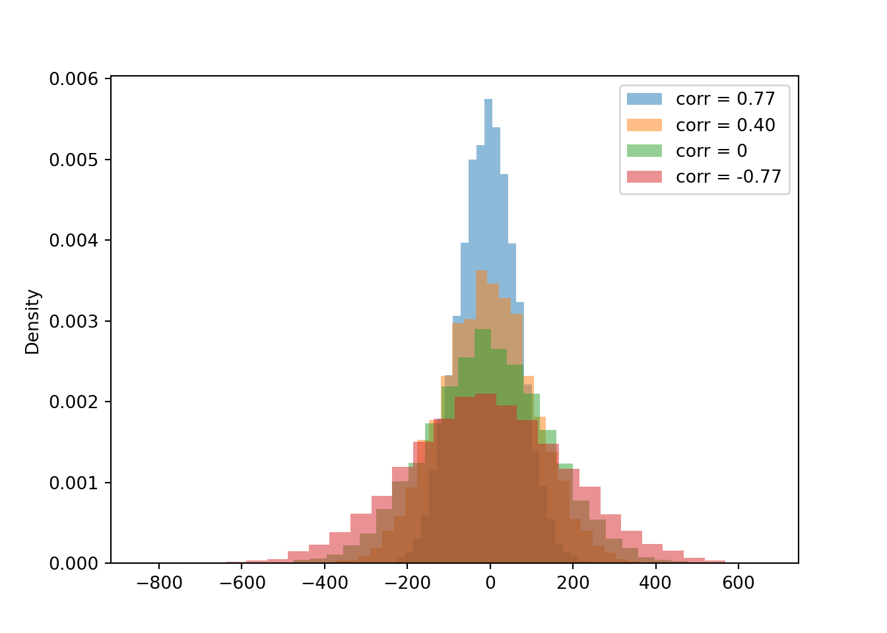
The simulated mean, variance, and standard deviation as close to what we computed in the previous example (of course, there is natural simulation variability).
d.mean(), d2.mean(), d3.mean(), d4.mean()(-6.376307173642675, -5.9708336940001825, -5.8418211161883375, -9.234364840722872)d.sd(), d2.sd(), d3.sd(), d4.sd()(70.88876846890325, 113.14043856351147, 146.67915737174494, 193.33814678373426)Compare the 90th percentiles of \(X-Y\). The largest value for the 90th percentile occurs when there is the most variability in the difference, so we see more extreme values of the difference.
d.quantile(0.9), d2.quantile(0.9), d3.quantile(0.9), d4.quantile(0.9)(83.87701722026783, 139.93778692570507, 179.9706570712293, 239.64073937058774)The variance of the sum is the sum of the variances if and only if \(X\) and \(Y\) are uncorrelated. \[\begin{align*} \textrm{Var}(X+Y) & = \textrm{Var}(X) + \textrm{Var}(Y)\qquad \text{if $X, Y$ are uncorrelated}\\ \textrm{Var}(X-Y) & = \textrm{Var}(X) + \textrm{Var}(Y)\qquad \text{if $X, Y$ are uncorrelated} \end{align*}\]
The variance of the difference of uncorrelated random variables is the sum of the variances. Think just about the range of values. Suppose SAT Math and Reading scores are each uniformly distributed on the interval [200, 800]. Then the sum takes values in [400, 1600], an interval of length 1200. The difference takes values in \([-600, 600]\), also an interval of length 1200.
Combining the formula for variance of sums with some properties of covariance in the next subsection, we have a general formula for the variance of a linear combination of two random variables. If \(a, b, c\) are non-random constants and \(X\) and \(Y\) are random variables then \[ \textrm{Var}(aX + bY + c) = a^2\textrm{Var}(X) + b^2\textrm{Var}(Y) + 2ab\textrm{Cov}(X, Y) \]
The formulas for variance of sums and differences are application of several more general properties of covariance. Let \(X,Y,U,V\) be random variables and \(a,b,c,d\) be non-random constants.
Properties of covariance. \[\begin{align*} \textrm{Cov}(X, X) &= \textrm{Var}(X)\qquad\qquad\\ \textrm{Cov}(X, Y) & = \textrm{Cov}(Y, X)\\ \textrm{Cov}(X, c) & = 0 \\ \textrm{Cov}(aX+b, cY+d) & = ac\textrm{Cov}(X,Y)\\ \textrm{Cov}(X+Y,\; U+V) & = \textrm{Cov}(X, U)+\textrm{Cov}(X, V) + \textrm{Cov}(Y, U) + \textrm{Cov}(Y, V) \end{align*}\]
The last two properties together are called bilinearity of covariance. These properties extend naturally to sums involving more than two random variables. To compute the covariance between two sums of random variables, compute the covariance between each component random variable in the first sum and each component random variable in the second sum, and sum the covariances of the components.
Many statistical applications involve random sampling from a population. And one of the most basic operations in statistics is to average the values in a sample. If a sample is selected at random, then the sample mean is a random variable that has a distribution. How does this distribution behave?
Many problems in statistics involve sampling from a population. The population distribution describes the distribution of values of a variable over all individuals in the population. The population mean, denoted \(\mu\), is the average of the values of the variable over all individuals in the population.
The population standard deviation, denoted \(\sigma\), is the standard deviation of all the individual values in the population.
A (simple) random sample of size \(n\) is a collection of random variables \(X_1,\ldots,X_n\) that are independent and identically distributed (i.i.d.)
The sample mean is \[ \bar{X}_n = \frac{X_1 + \cdots + X_n}{n} = \frac{S_n}{n}, \] where \(S_n=X_1+\cdots+X_n\) is the sum (total) of values in the sample. Because the sample is randomly selected, the sample mean \(\bar{X}_n\) is a random variable that has a distribution. This distribution describes how sample means vary from sample-to-sample over many random samples of size \(n\).
Over many random samples, sample means do not systematically overestimate or underestimate the population mean. (We say that the sample mean \(\bar{X}\) is an unbiased estimator of the population mean \(\mu\).) \[ \textrm{E}(\bar{X}_n) = \mu \]
Variability of sample means depends on the variability of individual values of the variable; the more the values of the variable vary from individual-to-individual in the population, the more the sample means will vary from sample-to-sample. However, sample means are less variable than individual values of the variable. Furthermore, the sample-to-sample variability of sample means decreases as the sample size increases \[\begin{align*} \textrm{Var}(\bar{X}_n) & = \frac{\sigma^2}{n}\\ \textrm{SD}(\bar{X}_n) & = \frac{\sigma}{\sqrt{n}} \end{align*}\] Over many random samples, sample means from larger random samples vary less, from sample to sample, than sample means from smaller random samples. The standard deviation of sample means decreases as the sample size increases, but this reduction in SD follows a “square root rule”. For example, if the sample size is increased by a factor of 4, then the sample-to-sample standard deviation of the sample mean is reduced by a factor of \(\sqrt{4} = 2\).
Given the population mean \(\mu\) and population standard deviation \(\sigma\), the above formulas provide the mean and standard deviation of the sample-to-sample distribution of sample means for any sample size. But what about the shape of the sample-to-sample distribution of sample means?
In Example 6.10 we found the distribution of sample means by enumerating all possible samples, but this strategy is unfeasible in almost all problems. Therefore, we need other ways of finding or approximating the distribution of \(\bar{X}_n\). As always, simulation is an excellent way to approximate distributions.
Before simulating sample means, we first simulate individual values. The following simulates the population distribution of individual values of the variable \(X\) in Example Example 6.10.
population = BoxModel([5, 6, 7], probs = [0.4, 0.4, 0.2])
X = RV(population)
x = X.sim(10000)
x| Index | Result |
|---|---|
| 0 | 5 |
| 1 | 5 |
| 2 | 7 |
| 3 | 5 |
| 4 | 6 |
| 5 | 5 |
| 6 | 5 |
| 7 | 6 |
| 8 | 6 |
| ... | ... |
| 9999 | 5 |
x.mean(), x.var(), x.sd()(5.8092, 0.56139536, 0.7492632114284005)x.plot()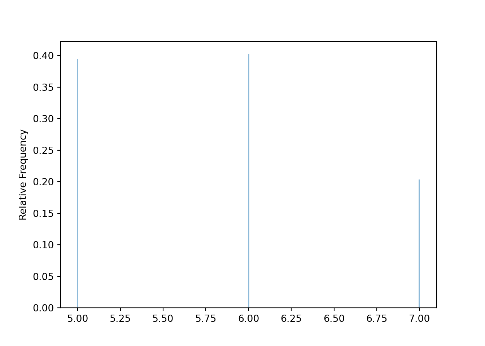
Now we simulate sample means for many samples of size 2. The random variable Xbar below takes n independent simulated values from the population (population ** n) and returns the sample mean. The sim(10000) command simulates 10000 samples of size n and computes the sample mean for each of these 10000 samples.
population = BoxModel([5, 6, 7], probs = [0.4, 0.4, 0.2])
n = 2
Xbar = RV(population ** n, mean)
xbar = Xbar.sim(10000)
xbar| Index | Result |
|---|---|
| 0 | 6.0 |
| 1 | 6.5 |
| 2 | 6.5 |
| 3 | 5.0 |
| 4 | 6.5 |
| 5 | 6.0 |
| 6 | 5.0 |
| 7 | 5.5 |
| 8 | 7.0 |
| ... | ... |
| 9999 | 5.0 |
xbar.mean(), xbar.var(), xbar.sd(), xbar.count_gt(6) / xbar.count()(5.8015, 0.27904775000000004, 0.5282497042119381, 0.2024)xbar.plot()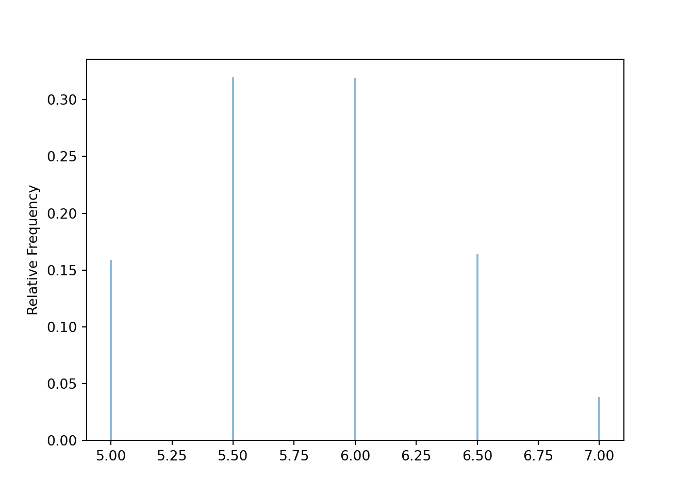
The simulation results are consistent with our work in Example 6.10.
In general, the exact shape of the distribution of \(\bar{X}_n\) depends on the shape of the population distribution of individual values, in a complicated way3. Fortunately, the approximate shape of the distribution of \(\bar{X}_n\) often follows a specific distribution that we’re well acquainted with.
Now we revise our simulation to simulate samples of size 30 and their sample means.
population = BoxModel([5, 6, 7], probs = [0.4, 0.4, 0.2])
n = 30
Xbar = RV(population ** n, mean)
xbar = Xbar.sim(10000)
xbar| Index | Result |
|---|---|
| 0 | 5.933333333333334 |
| 1 | 6.0 |
| 2 | 5.766666666666667 |
| 3 | 5.8 |
| 4 | 5.8 |
| 5 | 5.933333333333334 |
| 6 | 5.933333333333334 |
| 7 | 5.566666666666666 |
| 8 | 5.9 |
| ... | ... |
| 9999 | 5.8 |
Compare the simulation based approximations of \(\textrm{E}(\bar{X}_{30})\), \(\textrm{Var}(\bar{X}_{30})\), and \(\textrm{SD}(\bar{X}_{30})\) to the their theoretical values determined above.
xbar.mean(), xbar.var(), xbar.sd()(5.8005, 0.018192416666666662, 0.13487926700077615)Our simulation shows that the sample-to-sample distribution of sample means over many samples of size 30 has an approximate Normal shape.
xbar.plot()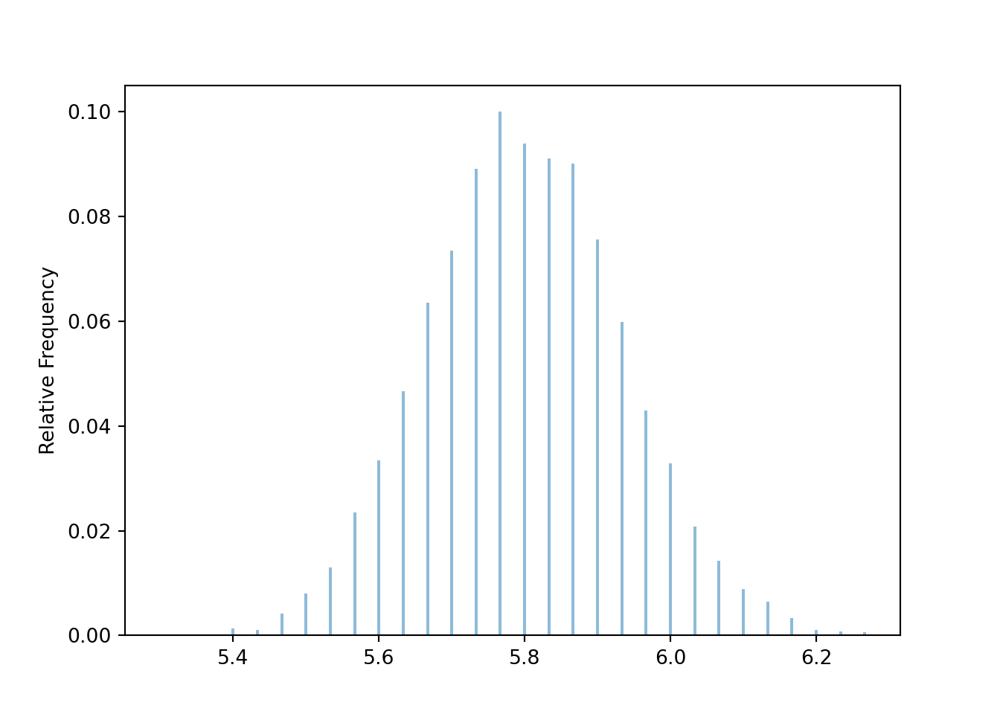
Compare the simulation based approximation of \(\textrm{P}(\bar{X}_{30} > 6)\) with the Normal approximation4.
xbar.count_gt(6) / xbar.count(), 1 - Normal(5.8, sqrt(0.56) / sqrt(n)).cdf(6)(0.0559, np.float64(0.07161745376233464))The previous example illustrates that if the sample size is large enough then the sample-to-sample distribution of sample means will be approximately Normal even if the population distribution of individual values is not. This idea is formalized in the Central Limit Theorem.
The (Standard) Central Limit Theorem5. Let \(X_1,X_2,\ldots\) be independent and identically distributed (i.i.d.) random variables with finite mean \(\mu\) and finite standard deviation6 \(\sigma\). Then7 \(\bar{X}_{n}\) has an approximate Normal distribution, if \(n\) is large enough. That is, \[ \text{$\bar{X}_n$ has an approximate $N\left(\mu,\frac{\sigma}{\sqrt{n}}\right)$ distribution, if $n$ is large enough.} \]
We can switch back and forth between sums and averages: the sum is just the sample mean times the sample size, \(S_n = n\bar{X}_n\). Multiplying \(\bar{X}_n\) by the number \(n\) will not change the general shape of the distribution, just its mean and standard deviation. So the CLT also says that the sum \(S_{n}\) has an approximate Normal distribution, if \(n\) is large enough. That is, \[ \text{$S_n$ has an approximate $N(n\mu,\sigma\sqrt{n})$ distribution, if $n$ is large enough} \]
The CLT says that if the sample size is large enough, the sample-to-sample distribution of sample means (or sums) is approximately Normal, regardless of the shape of the population distribution. A natural question: “How large is large enough?” The short answer: it depends. We’ll elaborate after the following example.
The following simulation uses the population distribution from Example 6.12. The distribution of sample means is not Normal when \(n=30\). (The distinct “humps” basically correspond to samples with no people who spent 30 dollars, samples with exactly 1 person who spent 30 dollars, samples with exactly 2 people who spent 30 dollars, etc)
population = BoxModel([5, 6, 7, 30], probs = [0.4, 0.4, 0.19, 0.01])
n = 30
Xbar = RV(population ** n, mean)
xbar = Xbar.sim(10000)
xbar| Index | Result |
|---|---|
| 0 | 5.733333333333333 |
| 1 | 5.9 |
| 2 | 5.6 |
| 3 | 5.633333333333334 |
| 4 | 5.8 |
| 5 | 5.5 |
| 6 | 5.633333333333334 |
| 7 | 6.4 |
| 8 | 5.633333333333334 |
| ... | ... |
| 9999 | 5.566666666666666 |
xbar.plot()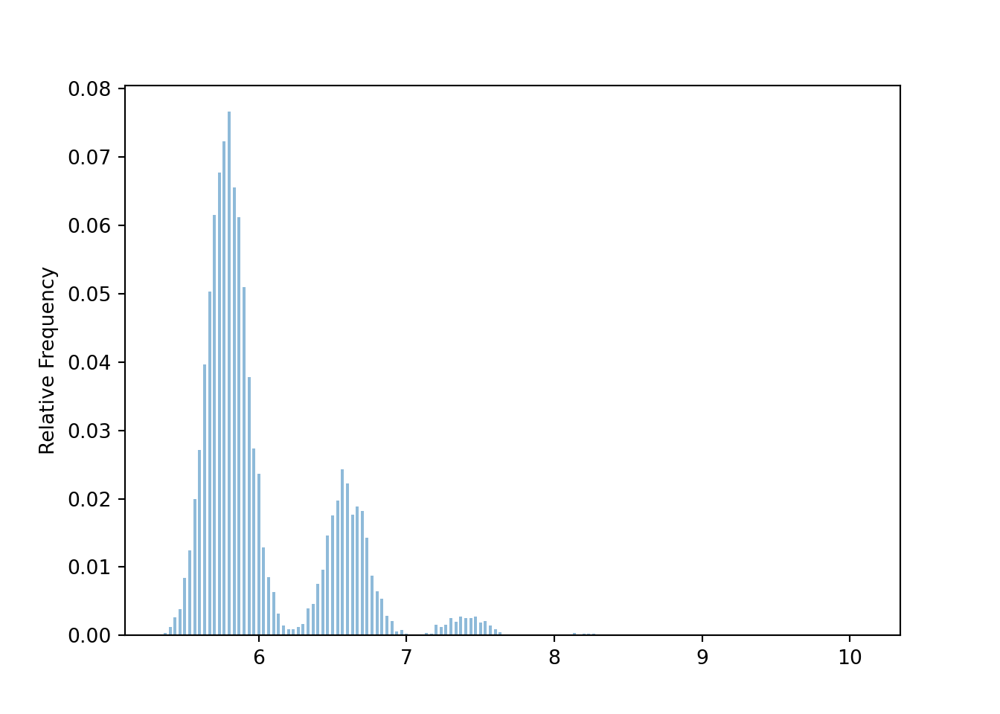
For samples of size 100, the distribution is sample means is less distinctly “humpy”, but still far from Normal.
population = BoxModel([5, 6, 7, 30], probs = [0.4, 0.4, 0.19, 0.01])
n = 100
Xbar = RV(population ** n, mean)
xbar = Xbar.sim(10000)xbar.plot()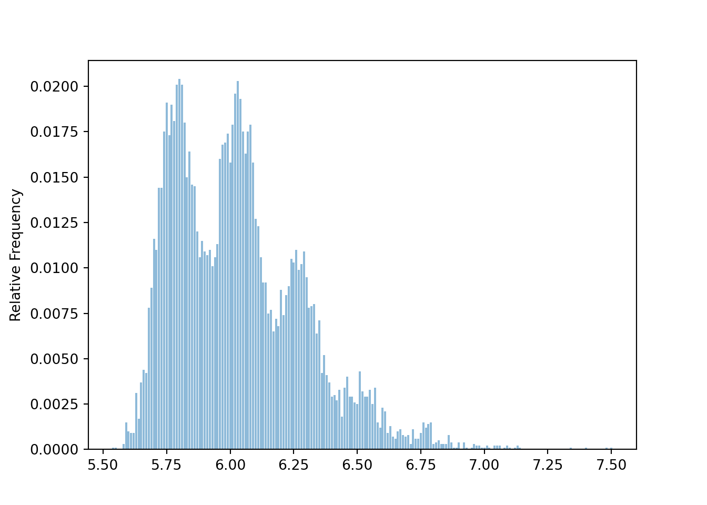
For samples of size 300, the humps have disappeared, but the distribution of sample means is still a little right skewed compared with a Normal distribution.
population = BoxModel([5, 6, 7, 30], probs = [0.4, 0.4, 0.19, 0.01])
n = 300
Xbar = RV(population ** n, mean)
xbar = Xbar.sim(10000)xbar.plot('hist')
Normal(6.03, 2.52 / sqrt(n)).plot()<symbulate.distributions.Normal object at 0x0000022CE02B9310>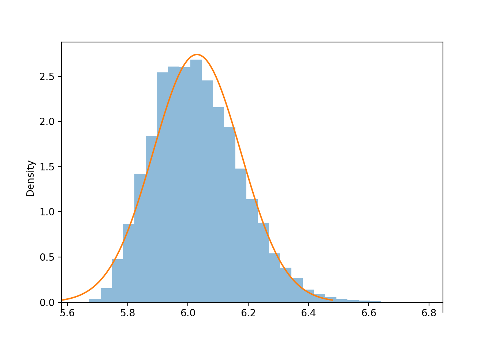
The previous example is an early cautionary tale. There is no magic number8 for how large the sample size needs to be for the CLT to kick in.
The CLT says that if the sample size is large enough, the sample-to-sample distribution of sample means is approximately Normal, regardless of the shape of the population distribution. However, the shape of the population distribution — which describes the distribution of individual values of the variable — does matter in determining how large is large enough.
You should certainly be aware that some population distributions require a large sample size for the CLT to kick in. However, in many situations the sample-to-sample distributions of sample means is approximately Normal even for small or moderate sample sizes.
Clicking on the following will take you to a Colab notebook that conducts a simulation of samples means like the ones earlier in the section. You can experiment with different population distributions and sample sizes to see the Central Limit Theorem in action.
The Central Limit Theorem provides a relatively simple and easy way to approximate probabilities in a wide variety of problems that involve sums or averages of many independent random quantities. In some of the next few examples we’ll work with sample means \(\bar{X}_n\); in the others, sums \(S_n\). Either way is fine; you just need to make sure you use the appropriate mean (\(\mu\) versus \(n\mu\)) and standard deviation (\(\sigma/\sqrt{n}\) versus \(\sigma/\sqrt{n}\)) for the Normal distribution. To avoid confusion, you might want to translate every problem in terms of \(\bar{X}_n\).
Is a sample size of 20 large enough for a Normal approximation in the previous problem? Here is our population distribution, the Poisson(2.7) distribution.
Poisson(2.7).plot()<symbulate.distributions.Poisson object at 0x0000022CCBD77CB0>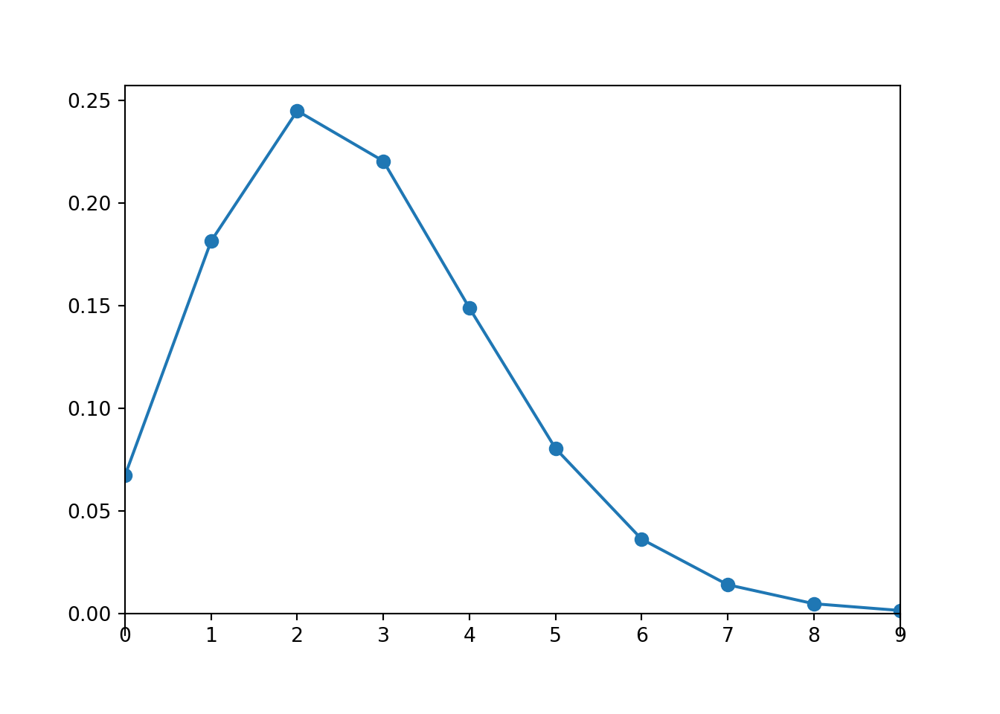
A Poisson(2.7) distribution is not very skewed, does not produce many extreme values, and has a single peak, so maybe a small sample size like 20 is ok for the distribution of sample means to be approximately Normal. Simulation confirms this.
population = Poisson(2.7)
n = 20
S = RV(population ** n, sum)
s = S.sim(10000)
s.count_gt(60) / s.count()0.1877s.plot('hist')
Normal(2.7 * n, sqrt(2.7) * sqrt(n)).plot()<symbulate.distributions.Normal object at 0x0000022CE02E9810>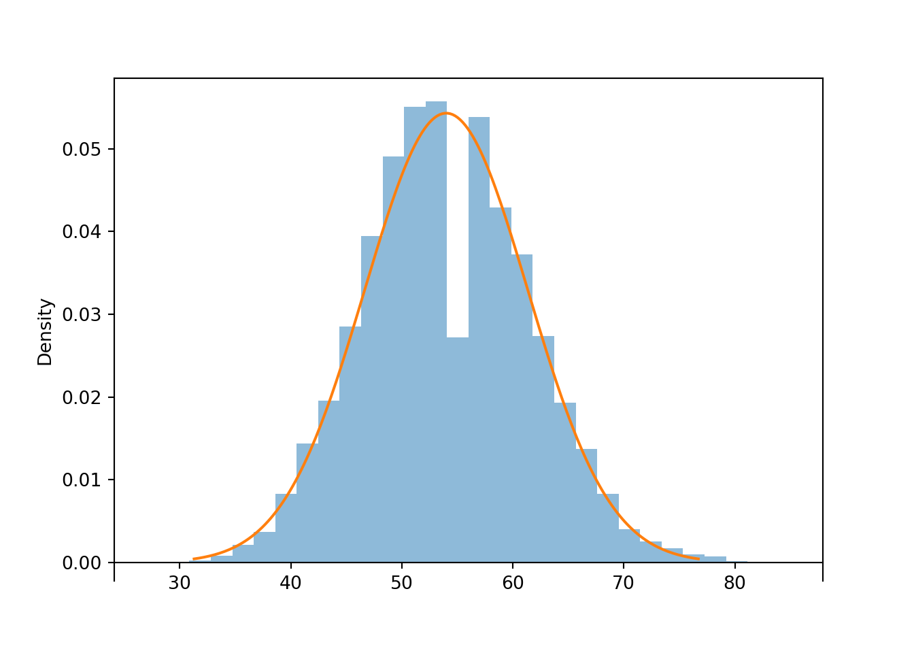
In the previous problem we could have just used Poisson aggregation: \(S_{20}\) has a Poisson(54) distribution. The probability from the Normal approximation is reasonably close9 to the theoretical probability that Poisson(54) distribution yields a value greater than 60. Of course, the simulated relative frequency of sums greater than 60 is also close to the theoretical probability.
1 - Poisson(2.7 * 20).cdf(60)np.float64(0.18675483040641572)Is a sample size of 10 large enough for a Normal approximation in the previous problem? The Uniform(215, 225) distribution certainly isn’t Normal, but it is symmetric, and it is bounded so it never produces super extreme values. Simulation suggests that for a Uniform population, even a sample size of 10 is large enough for the sample-to-sample distribution of sample means to be approximately Normal.
population = Uniform(215, 225)
n = 10
Xbar = RV(population ** n, mean)
xbar = Xbar.sim(10000)
abs(xbar - 220).count_lt(1) / xbar.count()0.7199xbar.plot('hist')
Normal(220, (10 / sqrt(12)) / sqrt(n)).plot()<symbulate.distributions.Normal object at 0x0000022CDE940D60>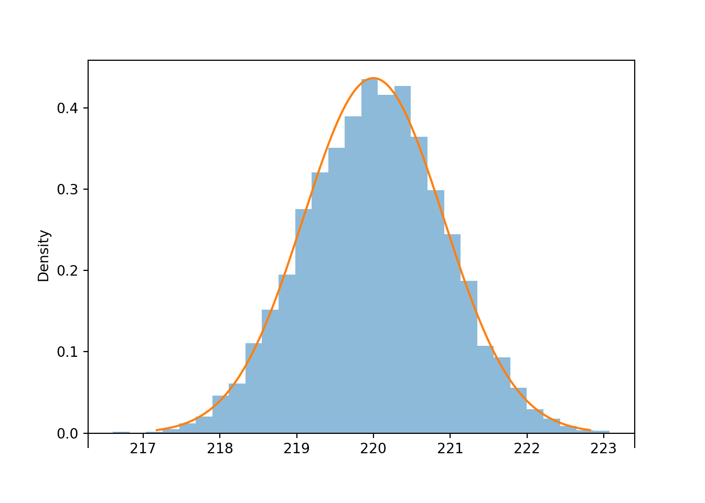
In the previous problem, we applied the CLT to the sum of the first 79 rolls. Simulation confirms that the distribution of \(S_{79}\) is approximately Normal.
population = BoxModel([1, 2, 3, 4, 5, 6])
n = 79
S = RV(population ** n, sum)
s = S.sim(10000)
s.count_leq(300) / s.count()0.9452s.plot('hist')
Normal(3.5 * n, 1.708 * sqrt(n)).plot()<symbulate.distributions.Normal object at 0x0000022CDE940180>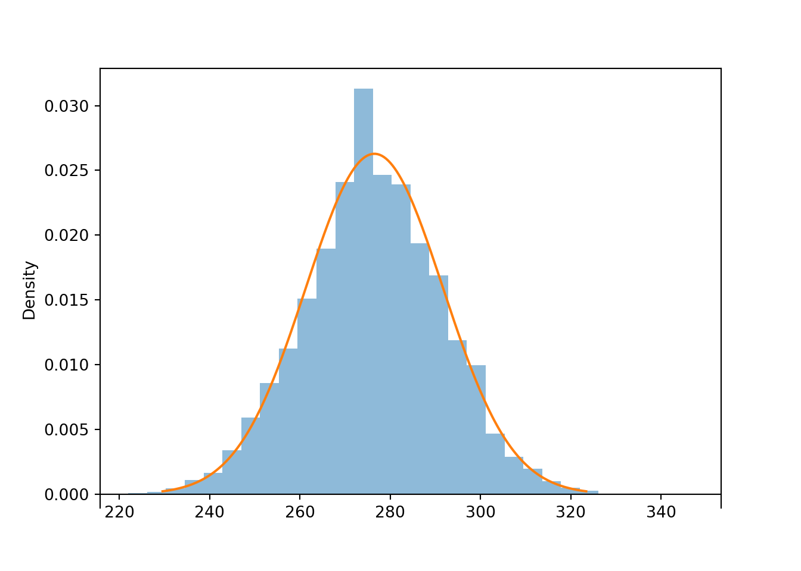
Below we simulate the distribution of the random number of rolls needed for the sum to exceed 300.
t = 300
def sum_until_t(omega):
trials_so_far = []
for i, w in enumerate(omega):
trials_so_far.append(w)
if sum(trials_so_far) > t:
return i + 1
P = BoxModel([1, 2, 3, 4, 5, 6], size=inf)
X = RV(P, sum_until_t)
x = X.sim(10000)
plt.figure()
x.plot()
plt.show()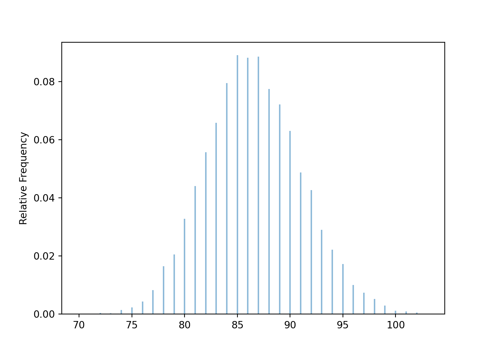
x.mean(), x.sd(), x.count_geq(80) / x.count()(86.5407, 4.5408527293890515, 0.9456)Be careful to distinguish between what the CLT does say, and what it doesn’t say. The CLT doesn’t say anything about the shape of the population distribution of individual values of the variable; it can be anything. Randomly selected samples tend to be representative of the population they’re sampled from, so we expect the shape of the distribution of individual values in the sample to resemble the shape of the distribution of individual values in the population, regardless of the sample size. Over many samples, the distribution of individual values within each sample will resemble the population distribution. For example, if the population distribution has an Exponential shape, then the distribution of values in any single randomly selected sample will tend to have a roughly Exponential shape.
The CLT applies to how sample means behave over many samples, not what happens within any single sample. If \(n\) is large enough, then over many samples of size \(n\) the sample-to-sample distribution of sample means will be approximately Normal, regardless of the shape of the population distribution of individual values of the variable.
You might say: “Why do we need the CLT? We can always approximate the distribution of sample means with a simulation”. (And a simulation often provides a better approximation than a Normal approximation, as illustrated by Example 6.13.) True! And we certainly want to encourage you to use simulation as much as possible! But the CLT is definitely something well worth knowing; here are just a few reasons.
Why should the CLT be true? We have seen examples providing evidence that the CLT is true, but it is far from obvious just why the CLT is true. Unfortunately, there is not an easy intuitive explanation, but we’ll try our best to provide an idea of why the CLT is true.
The CLT says something about the distribution of an average (or sum) of a large number of terms. Here we’ll focus on averages; sums can be treated similarly. Understanding why the theorem should be true involves the following key ideas in sequence. Try to convince yourself of the following (“if 1 is true then 2 has to be true”, “if 2 is true then 3 has to be true”, etc).
Putting it all together gives the conclusion of the CLT.
Before elaborating on these steps, consider an analogy. Suppose you have the following sum, [ 10 + 1 + 1 + 1 + 1 + 1 + ] where you just keep adding 1’s forever. Now look at the average of the first \(n\) terms: \[ \frac{10 + 1 + 1 + 1 + \cdots +1}{n} = \frac{10}{n} + \frac{1}{n}+ \frac{1}{n}+ \frac{1}{n}+ \cdots + \frac{1}{n}. \] If \(n\) is large each of the terms in the sum on the right in the line above is close to 0 and does not contribute significantly by itself to the overall average. So even if a small fraction of the 1’s were changed to 10’s, for large enough \(n\) these few changes do not matter in terms of the overall average; if \(n\) is large the average will be very close to 1. What wins out is that most of the terms are 1’s.
Key idea 1.
The CLT is somewhat analogous to the above example. The first key idea in why the CLT should be true is that if there are enough independent random quantities being averaged then the contribution to the overall average of any particular quantity is small. This idea is what the “independent and identically distributed and finite variance” assumptions12 guarantee: while the \(X_i's\) are not all the same (as the 1’s were above), they are statistically the same. First, the values are independent. This is important because if there were dependence, then say knowing the first value is large might imply that the remaining values are also large; in this case the first value has a great deal of influence on the resulting average. Second, the individual \(X_i\) values come from the same population distribution (the identically distributed assumption). This means the \(X_i\)’s all “look alike” from the average’s perspective and so each term contributes about the same to the average. Again, this is all in “statistical” terms; the idea is that \(X_1\) has the same chance of being very big as \(X_2\) does, as \(X_3\) does, and so on. Since there are a large number of terms, each with roughly the same contribution, the contribution of any one is small.
Key idea 2. The previous paragraph explains why the independent and identically distributed assumptions imply that if there are enough terms being averaged then the contribution to the overall average of any particular term is small. Here is the second key idea in why the CLT is true. Since the contribution of each individual value to the overall average is small, the particular form of the population distribution — which describes how individual values behave — is not that important. What matters is what happens on average (like in the above example what mattered is that most of the terms were 1’s). The two key features of the population distribution that we do need are: 1) the population mean, which determines the “typical” value of each \(X_i\) (in the example, like saying “the typical value of each term is 1”) and 2) the population standard deviation, which determines how much variability around the overall mean there is (in the example, knowing the standard deviation is like knowing what fraction of the 1’s are replaced by 10’s). Higher order features of the distribution (like degree of symmetry or skewness, number of peaks) which describe specific features of the behavior of individual values are not important13 from the perspective of the average.
Key idea 3. The above reasoning suggests that if \(n\) is large enough then only the mean and standard deviation of the population distribution matter in terms of the distribution of the average. Thus, if two population distributions have the same mean and standard deviation then by the reasoning above they should lead to the same sampling distribution of \(\bar{X}\), if \(n\) is large enough, even if the population distributions have different shapes.
For example, suppose you roll 30 fair six-sided die and compute the average roll. Each individual die roll comes from a discrete uniform population on the values \(\{1, 2, 3, 4, 5, 6\}\) with mean \(\mu=3.5\) and standard deviation \(\sigma=\sqrt{35/12}\approx 1.708\). Now suppose you simulate 30 values from a N(3.5,\(1.708\)) distribution and compute the average. The above reasoning says the distribution of the averages will be the same in either case.
Key idea 4. Now the values of the averages can always be converted to standard units. Any variable in standard units has mean 0 and standard deviation 1. What all the above implies is that the distribution of the averages in standard units is the same for every population if \(n\) is large enough. So there is just one possible distribution for the averages in standard units, if \(n\) is large enough. It turns out that this one special distribution is the Standard Normal distribution.
Key idea 5. Basically, if you believe the above, then you only need to show that the N(0,1) is distribution of the averages in standard units for a single population distribution. Once you have done this, since the previous paragraph implies that there can only be one distribution for the average in standard units, then you know that it’s the N(0,1) distribution for all population distributions. Now imagine that your population distribution is N(0,1); i.e. the individual values follow this distribution. We have already seen that if the population distribution is Normal exactly then the distribution of the average is Normal exactly, for any sample size. From this fact, it follows that if your population distribution is N(0,1) then the distribution of the average in standard units is also N(0,1). So this shows that the special distribution is the Standard Normal.
All averages, including those used to compute variance and covariance, are computed by dividing the appropriate sum by 10.↩︎
If there were too much dependence, then the provided marginal probabilities might not be possible. For example if Slim always wakes up all the other kids, then the other marginal probabilities would have to be at least 6/7. So a specified set of marginal probabilities puts some limits on how much dependence there can be. This idea is similar to Example 1.15.↩︎
Finding the exact distribution of a sample mean involves a mathematical operation called convolution, which is, well, fairly convoluted.↩︎
A Normal distribution doesn’t provide the greatest approximation, because it is continuous while the sample mean from a discrete population is a discrete random variable. It is possible to improve the approximation to account for the discrete/continuous mismatch, called a “continuity correction”, but we won’t cover it.↩︎
There are actually many different versions of the Central Limit Theorem. In particular, it is not necessary that the \(X_i\) be strictly independent and identically distributed provided that some other conditions are satisfied. But the other versions are beyond the scope of this book↩︎
There are distributions with infinite (or undefined) SD, e.g., \(t\)-distributions with 1 or 2 degrees of freedom, and for these distributions the CLT won’t work. An infinite SD can occur when a distribution has very “heavy tails”, so the probability of large (or small) values decays very slowly. In these cases, there is a not insignificant probability of a few extreme outliers dominating the value of \(S_n\) and \(\bar{X}_n\), which affects the distribution of the averages.↩︎
Here is a technical statement of the theorem. Define the standardized (i.e. mean 0, SD 1) random variables \[ Z_n = \frac{S_n-n\mu}{\sigma\sqrt{n}} = \frac{\bar{X}_n-\mu}{\sigma/\sqrt{n}}. \] Then \(Z_n\) converges in distribution to Normal(0, 1). That is, for all \(z\in(-\infty,\infty)\), \[ \lim_{n\to\infty} \textrm{P}(Z_n\le z) =\int_{-\infty}^z \frac{1}{\sqrt{2\pi}} e^{-u^2/2}du \] Thus, the CLT says that if \(n\) is large enough, \(Z_n\) has an approximate standard Normal distribution. Converting back to the original data units, yields the approximate distributions of \(\bar{X}_n\) and \(S_n\).↩︎
If you’ve heard “\(n\ge 30\) is large enough”, forget it, because you just saw an example where that’s not true↩︎
Again, accounting for the discrete/continuous mismatch with a “continuity correction” can improve the approximation.↩︎
Well, we can use probability inequalities to get bounds. Since 120,000 is less than one standard deviation away from the population mean, Chebyshev’s inequality is no help. From Markov’s inequality the probability is at most \(100000/120000 = 0.833\). So all we can say is that the probability of interest is between 0 and 0.833, which isn’t saying much at all↩︎
Again, we can get bounds based on inequalities, but these bounds say very little about the shape of the distribution.↩︎
If the standard deviation were infinite, then there would be a relatively high probability of getting many values with huge magnitudes which could dominate the value of the overall average even if \(n\) were large. In the sum \(10+1+1+\cdots\), imagine changing even just a few of the 1’s to 1,000,000,000,000,000 — this could have a huge influence on the resulting average. Having the values very spread out like this (1 versus 1,000,000,000,000,000) is like having infinite standard deviation. In practice, if the standard deviation is very large (but finite) it will take a very large sample size for the CLT to kick in.↩︎
Where these features are important is in how large \(n\) needs to be for the CLT to kick in. The farther away the population distribution is from Normal, the larger \(n\) needs to be for the Normal approximation to be a good one.↩︎